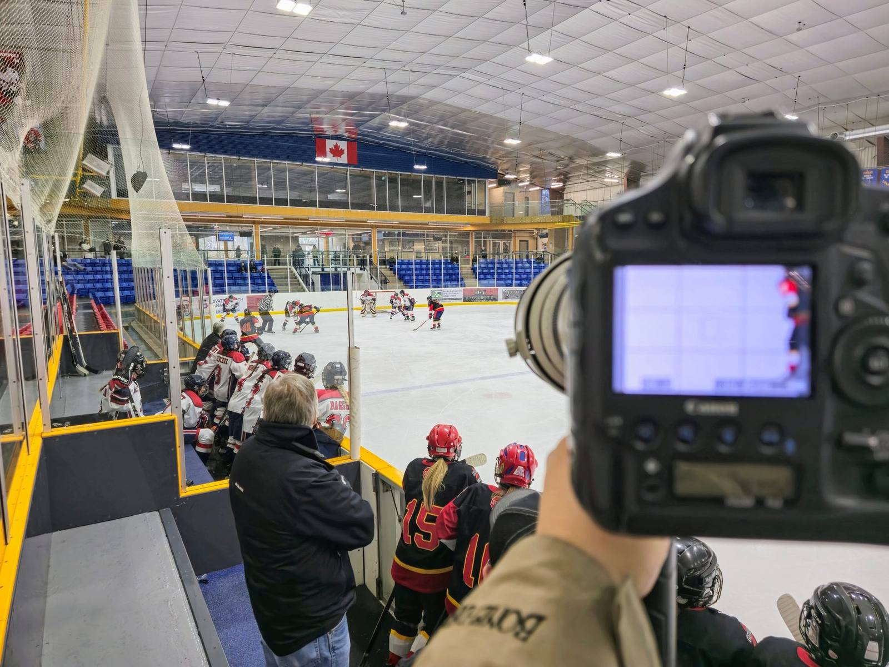

Under pressure
Built on tournament weekends.
1
On the job
Customer facing on tournament weekends
At DS Photography I work directly with parents and venue management, from point of sale to print orders. Getting their photos online while the event is still running means clear communication under pressure.
2
What it taught me
Organized under pressure
Tournament weekends taught me to stay organized under pressure. Photos have to be sorted and online before the event ends.
FrameworkClear, calm updates so people always know what is happening and when.